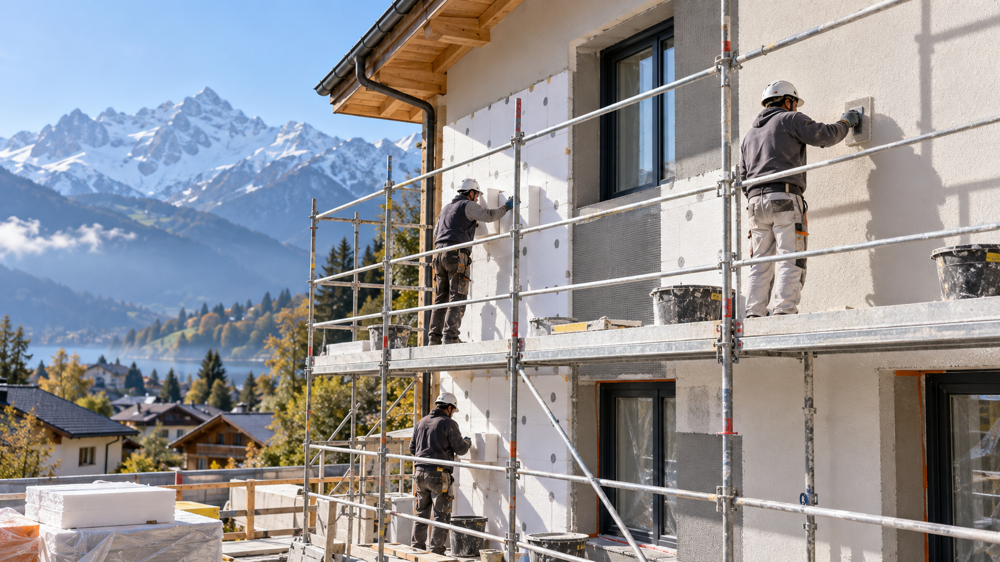

Des moyens adaptés aux chantiers de second œuvre.
Qualifications professionnelles, formations ciblées, équipements spécialisés, stockage et flotte d’intervention.
Qualifications déclarées dans le mémoire technique.

Compétences sécurité et techniques.
Amiante
Encadrement et opérateurs formés, avec recyclages mentionnés dans le mémoire.
ITE
Formation isolation par l’extérieur, module fibre de bois.
CACES
Chariots à conducteur porté et plates-formes élévatrices mobiles de personnel.
Échafaudage
Montage et démontage d’échafaudages.
Habilitation électrique
Formation BS – BE Manœuvre mentionnée pour le responsable technique.
Rénovation énergétique
Formation FEE BAT RENOV indiquée pour Laïla KAROUI.
Un dépôt, une flotte et du matériel métier.
Les équipements comprennent notamment ponceuses professionnelles, systèmes Airless, matériel de préparation des sols, outils de carrelage et de plaquiste, échafaudages roulants, lasers et équipements de protection individuelle.
Des procédures intégrées au fonctionnement chantier.
EPI
Équipements adaptés au métier et identification des équipes aux couleurs de l’entreprise.
Prévention
Évaluation des risques, affichages prévention et trousses de sécurité dans les véhicules.
Déchets
Organisation du tri, benne DIB, traitement des déchets liquides avec un fournisseur spécialisé et nettoyage quotidien.